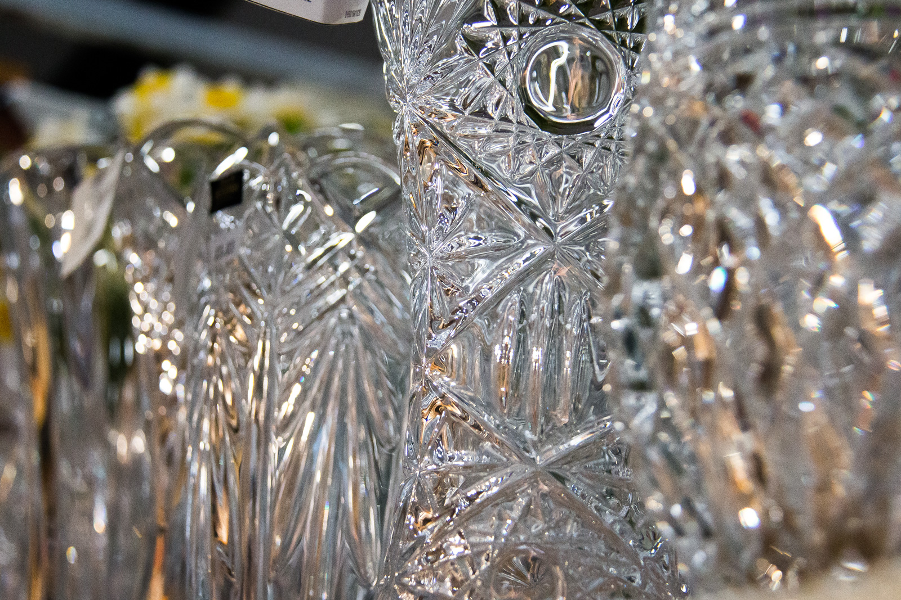
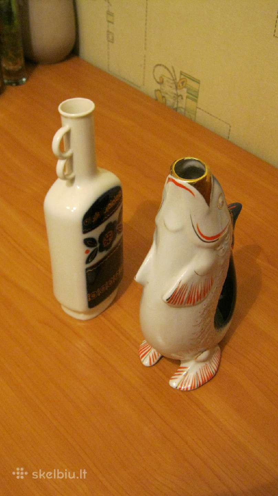
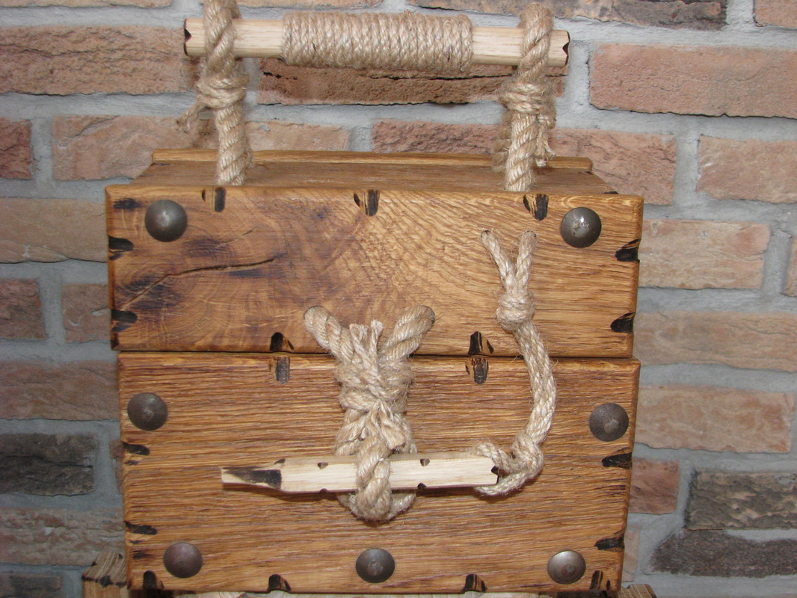

Suvenyrai | Lietuviška atributika | Urmas
2020.10.30 04:28
+370 37 350 662 I-V 9:00-18:00 VI 9:00-17:00 VII 9:00-15:00 Prekybos miestelio planas lt en APIE URMĄ
Informacija Lankytojui
APIE URMĄ Naujienos Renginiai Darbo laikas Nedarbo dienos Lojalumo programa Vaistinės Bankomatai Kavinės / restoranai Privatumo politikaTurgūs
Centrinis Kauno turgus Naktinis turgus Tarptautinis senturgis „Laiko ratu” Bagažinių turgusPastatai
Geltonoji galerija Baltoji galerija Rytinė galerija Vakarinė galerija Raudonasis pasažas ,,Urmas station”Aktuali informacija
KONTAKTAI Stilius, mada Maisto klubas Karjera Įgyvendinti projektai Urmo geležinkelio stotis Prekybos miestelio planas Elektromobilių įkrovimo stotelės registracija VERSLUIVerslui
Prekybinių patalpų nuoma Sandėlių nuoma Reklamos paslaugos Kodėl Urmas? Faktai, skaičiai, statistika Lokacija, vieta Urmo radijas KONTAKTAI Menu Skip to content Akcijos Naujienos Turgūs Renginiai Prekių katalogas ParduotuvėsSuvenyrai
Pradinis / Katalogas / namu-apyvokos-reikmenys / SuvenyraiPARDUOTUVĖS PAVADINIMAS VIETA PLAČIAU FATIJA VAKARINĖ GALERIJA 5 SALĖ, 132 PARDUOTUVĖ PLAČIAU Suvenyrai RYTINĖ GALERIJA 11 SALĖ, 28 Parduotuvė PLAČIAU ŠVENTINĖ ATRIBUTIKA. HELIO BALIONAI VAKARINĖ GALERIJA 4 SALĖ, 8 VIETA PLAČIAU ĮDOMI DOVANA VAKARINĖ GALERIJA 5 SALĖ, 26 PARDUOTUVĖ PLAČIAU ŠVENTINĖ ATRIBUTIKA VAKARINĖ GALERIJA 5 SALĖ, 22 PARDUOTUVĖ PLAČIAU SUVENYRAI VAKARINĖ GALERIJA 7 SALĖ, 147 PARDUOTUVĖ PLAČIAU ORIGINALI DOVANA RAUDONASIS PASAŽAS 1 SALĖ, 18A VIETA PLAČIAU ASORTIMENT IŠPARDUOTUVĖ RYTINĖ GALERIJA 17 SALĖ, 22 PARDUOTUVĖ PLAČIAU JUSENA RYTINĖ GALERIJA 11 SALĖ, 12 PARDUOTUVĖ PLAČIAU JUSENA RYTINĖ GALERIJA 11 SALĖ, 13 PARDUOTUVĖ PLAČIAU SĖKMĖS ŽENKLAI RYTINĖ GALERIJA 13 SALĖ, 20 PARDUOTUVĖ PLAČIAU ĮVAIRIŲ PREKIŲ PARDUOTUVĖ RYTINĖ GALERIJA 16 SALĖ, 20 PARDUOTUVĖ PLAČIAU SOLIDA RYTINĖ GALERIJA 13 SALĖ, 2 PARDUOTUVĖ PLAČIAU
Suvenyrai – tai smulkios dovanos, galinčios paskaidrinti nuotaiką, dieną ir pagyvinti namų interjerą. Jos gali būti pačios įvairiausios – tiek susijusios su Lietuvos istorija, tradicijomis ar tiesiog tautine simbolika, tiek su miesto simboliais. Štai, suvenyrai Kaune yra viena iš populiaresnių prekių, kurių taip pat galite rasti ir mūsų prekybos miestelyje. Jais pradžiuginti galite ne tik toli gyvenančius giminaičius, bet ir šeimos narius.
Simbolinės dovanėlės bet kokia proga
Ieškote nedidelės dovanos keliaujant į svečią šalį? O galbūt tiesiog norite nustebinti kolegas Valentino dienos proga? Pas mus galite rasti visko. Nuo klasikinių kiaulių taupyklių iki mielų, biuro darbo stalą puošiančių figūrėlių ar įvairių puodelių, stiklinių, taurių.
Suvenyrus mėgsta tiek vaikai, tiek suaugę, tad pradžiuginti nesunku kiekvieną. Juk tokios simbolinės dovanėlės taip pat gali būti ir praktiškas pasirinkimas. Ypač jeigu tai minkšta pagalvėlė ar palaidinė su linksmu humoristiniu užrašu. Tokias dovanas galima dovanoti įvairiomis progomis, pavyzdžiui: vardadienio proga, Valentino, moters, motinos ar tėvo dieną.
Suvenyrai Kaune, miesto centre, gali kainuoti brangiau arba juos rasti paprasčiausiai yra sudėtinga. Jei ir Jūs norite nupirkti nedidelę dovanėlę kolegai ar draugei, nepabijokite apsilankyti pas mus. Prekybos miestelyje „Urmas“ taip pat rasite žaismingų raktų pakabukų, firminių žiebtuvėlių, magnetų, laimę nešančių talismanų ir net zodiako ženkliukų.
Kaip rinkti?
Jei manote, kad tinkamą suvenyrinę dovanėlę išrinkti yra sudėtinga, galime padėti. Nuoširdžios mažos dovanos vidų sušildyti ir pradžiuginti gali daug labai nei prabangi dovana. Todėl jei norite pradžiuginti artimą žmogų, atsižvelkite į tai, ką asmuo veikia, mėgsta. Galbūt jis skundėsi pernelyg tuščiu darbo stalu? Padovanokite jam linksmą statulėlę. Dideliam sporto fanui patiks su ja susijusi atributika. Vardinis pakabukas tiks ir tiems, kuriems sunku sugalvoti ką dovanoti. Čia taip pat teikiame ir graviravimo paslaugas.
Suvenyrai – tai puikus pasirinkimas, siekiant originaliai nustebinti artimą žmogų miela smulkmena. Mažoms staigmenoms progos nereikia – stebinkite juos kasdien. Užsukite pas mus, į „Urmą“ ir išrinkite mažytę, bet nuoširdžią dovanėlę.
Sužinokite pirmi. Užsisakykite URMAS naujienas.
Klientui
Akcijos Naujienos Renginiai Darbo laikas Nedarbo dienos Lojalumo programa Kaip atvykti? Karjera Maisto klubas KONTAKTAIBagažinių turgus Bankomatai Centrinis Kauno turgus Kavinės / restoranai Naktinis turgus Tarptautinis senturgis „Urmas station“ Vaistinės Paštomatai
Verslui
Prekybinių patalpų nuoma Sandėlių nuoma Reklamos paslaugos Kodėl Urmas? Faktai, skaičiai, statistika Lokacija, vieta Urmo radijasKaip Mus rasti?
BENDRAUKIME
Informacija telefonu: (8 37) 350 662 Urmas darbo laikas: I-V 9:00-18:00 VI 9:00-17:00 VII 9:00-15:00 Siekdami pagerinti Jūsų naršymo kokybę, statistiniais ir rinkodaros tikslais šioje svetainėje naudojame slapukus (angl. cookies). Ar sutinkate, kad slapukai būtų naudojami informacijai apie Jūsų naršymo istoriją kaupti? Sutinku | Nesutinku | Privatumo politika- Suvenyrai - Gėlių Šalis
- Suvenyrai – Oficiali BC Žalgiris atributika
- Suvenyrai - ARMY SHOP - Karine apranga, taktine avalyne ...
- suvenyrai | pigu.lt
- Pradžia | Lietuviški mediniai suvenyrai ir dovanos ...
- Suvenyrai - Kauno technologijos universitetas
- Rašikliai, bloknotai, magnetukai, suvenyrai, fotodrobės
- Suvenyrai | Lietuviška atributika | Urmas
- Suvenyrai
- Suvenyrai, apdovanojimai - Lstudija
- Suvenyrai - Gėlių Šalis
BC Kauno Žalgiris atributika, apranga, suvenyrai +370 622 77 027 info@zalgirisshop.lt Apie mus Naujienos Apmokėjimo būdai Pristatymo būdai D.U.K Kontaktai Privatumo politika
- Suvenyrai – Oficiali BC Žalgiris atributika
Dovanos, suvenyrai / Suvenyrai Rodoma 1–40 iš 46 Numatytasis rikiavimas Rikiuoti pagal populiarumą Rikiuoti nuo naujausių Rikiuoti pagal kainą (min → maks) Rikiuoti pagal kainą (maks → min)
- Suvenyrai - ARMY SHOP - Karine apranga, taktine avalyne ...
Rašikliai, bloknotai, magnetukai, suvenyrai, fotodrobės Filtruoti: Nesurikiuota Naujausios viršuje Pigiausios viršuje Brangiausios viršuje A-Ž pagal abėcėlę Ž-A pagal abėcėlę Geriausiai įvertintos
- suvenyrai | pigu.lt
Suvenyrai – tai smulkios dovanos, galinčios paskaidrinti nuotaiką, dieną ir pagyvinti namų interjerą. Jos gali būti pačios įvairiausios – tiek susijusios su Lietuvos istorija, tradicijomis ar tiesiog tautine simbolika, tiek su miesto simboliais.
- Pradžia | Lietuviški mediniai suvenyrai ir dovanos ...
suvenyrai gera kaina internetu. Didelis prekių pasirinkimas, saugus pirkimas, prekių pristatymas į namus ar biurą. Įsigykite prekes internetu pigiau.
- Suvenyrai - Kauno technologijos universitetas
Aukštos kokybės kareiviški suvenyrai, atributika, vėliavos, ID žetonai ir kiti kareiviški reikmenys. Originalūs antikvariniai suvenyrai, reprodukcija ir dovanos. Platus kareiviškos atributikos, suvenyrų ir reikmenų pasirinkimas, išskirtinis dizainas, kokybiškos medžiagos.
- Rašikliai, bloknotai, magnetukai, suvenyrai, fotodrobės
Suvenyrai Rodyti per puslapį: 12 25 50 75 100 Rikuoti pagal: Pagal nutylėjimą Pavadinimą (A - Z) Pavadinimą (Z - A) Kainą (Nuo pigiausių) Kainą (Nuo brangiausių) Įvertinimą (Nuo aukščiausių) Įvertinimą (Nuo žemiausių) Prekės kodą (A - Z) Prekės kodą (Z - A)
- Suvenyrai | Lietuviška atributika | Urmas
Įvairaus asortimento SUVENYRAI skirti maloniai nustebinti draugus, artimuosius ar tiesiog papuošti namus.
- Suvenyrai
Suvenyrai. žiūrėti. Dovanos. žiūrėti. Ieškoti: Ieškoti. Suvenyrų kategorijos. Akinių dėklai (2) Aksesuarai plaukams (4) Antpirščiai (2) Apyrankės (7) Dėžutės (1) Dovanos (139) Juostelės (3) Kalėdinės dekoracijos (7) Laikrodžiai (4) Magnetai (97)
- Suvenyrai, apdovanojimai - Lstudija
Suvenyrai, apdovanojimai Tai autoriniai dalininkės Loretos Valantiejienės darbai išgraviruoti ant įvairių suvenyrų, bei papuošalų, kurios gaminame tik iš natūralių žaliavų. Tikimės, kad šie išskirtinio braižo ir orginalūs meno dirbiniai bus puikus sprendimas ieškantiems dovanos tiek sau , tiek ir draugams bei artimiesiems.
BC Kauno Žalgiris atributika, apranga, suvenyrai +370 622 77 027 info@zalgirisshop.lt Apie mus Naujienos Apmokėjimo būdai Pristatymo būdai D.U.K Kontaktai Privatumo politika
Dovanos, suvenyrai / Suvenyrai Rodoma 1–40 iš 46 Numatytasis rikiavimas Rikiuoti pagal populiarumą Rikiuoti nuo naujausių Rikiuoti pagal kainą (min → maks) Rikiuoti pagal kainą (maks → min)
Rašikliai, bloknotai, magnetukai, suvenyrai, fotodrobės Filtruoti: Nesurikiuota Naujausios viršuje Pigiausios viršuje Brangiausios viršuje A-Ž pagal abėcėlę Ž-A pagal abėcėlę Geriausiai įvertintos
Suvenyrai – tai smulkios dovanos, galinčios paskaidrinti nuotaiką, dieną ir pagyvinti namų interjerą. Jos gali būti pačios įvairiausios – tiek susijusios su Lietuvos istorija, tradicijomis ar tiesiog tautine simbolika, tiek su miesto simboliais.
suvenyrai gera kaina internetu. Didelis prekių pasirinkimas, saugus pirkimas, prekių pristatymas į namus ar biurą. Įsigykite prekes internetu pigiau.
Aukštos kokybės kareiviški suvenyrai, atributika, vėliavos, ID žetonai ir kiti kareiviški reikmenys. Originalūs antikvariniai suvenyrai, reprodukcija ir dovanos. Platus kareiviškos atributikos, suvenyrų ir reikmenų pasirinkimas, išskirtinis dizainas, kokybiškos medžiagos.
Suvenyrai Rodyti per puslapį: 12 25 50 75 100 Rikuoti pagal: Pagal nutylėjimą Pavadinimą (A - Z) Pavadinimą (Z - A) Kainą (Nuo pigiausių) Kainą (Nuo brangiausių) Įvertinimą (Nuo aukščiausių) Įvertinimą (Nuo žemiausių) Prekės kodą (A - Z) Prekės kodą (Z - A)
Įvairaus asortimento SUVENYRAI skirti maloniai nustebinti draugus, artimuosius ar tiesiog papuošti namus.
Suvenyrai. žiūrėti. Dovanos. žiūrėti. Ieškoti: Ieškoti. Suvenyrų kategorijos. Akinių dėklai (2) Aksesuarai plaukams (4) Antpirščiai (2) Apyrankės (7) Dėžutės (1) Dovanos (139) Juostelės (3) Kalėdinės dekoracijos (7) Laikrodžiai (4) Magnetai (97)
Suvenyrai, apdovanojimai Tai autoriniai dalininkės Loretos Valantiejienės darbai išgraviruoti ant įvairių suvenyrų, bei papuošalų, kurios gaminame tik iš natūralių žaliavų. Tikimės, kad šie išskirtinio braižo ir orginalūs meno dirbiniai bus puikus sprendimas ieškantiems dovanos tiek sau , tiek ir draugams bei artimiesiems.
  